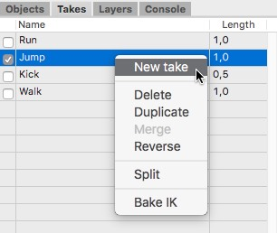

テイク マネージャテイクマネージャは、独立したアニメーションのテイクやクリップを作成する時の大変強力なツールです。例えば、巨大な建築モデルがあり、建物の中を飛ぶいくつかの独立したカメラ（シーン）を作成したい場合に。また他の重要な位置を占める部分として、3D ゲームのためのキャラクターアニメーションの作成があります。これらのキャラクターは走ったり、ジャンプしたり、またキックしたり、などの様々な動きを表現しますが、テイクマネージャを使って、それら個別のテイクにこれらのアニメーションを記録しておく事ができます。 テイクマネージャは３つのカラムのテーブルビューで構成されます。１つ目のカラムはどのテイクが現在アクティブかを表示しています。キーを記録した時に、キーはアクティブなテイクに記録されます。上のスクリーンショットでは、"Run" テイクがアクティブになっています。 新しいテイクを作成するには、テイクマネージャで右クリックし、コンテクストメニューから "New Take" を選択します。  Cheetah3D のテイクシステムは以前から、大変ポピュラーな FBX ファイルフォーマットと互換性があり、他のアニメーションシステムへアニメーションデータを移動したり、Unity のようなゲーム開発環境内で使用する事が可能です。 |